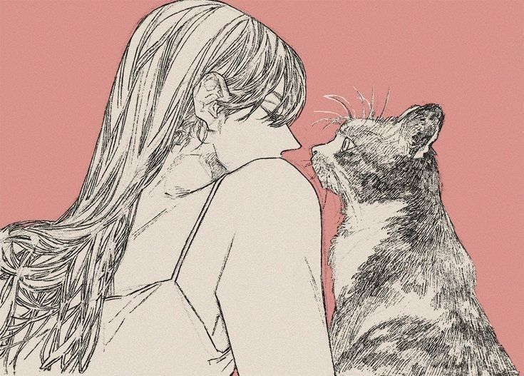

Знайомитися без поспіху
Не кожен котик одразу готовий до обіймів. Іноді найкращий початок дружби — спокійно посидіти поруч і дати йому час.
01 / ПРО НАС
«Мур» — маленький простір для великих любителів котиків. Тут знайомимося з їхніми звичками, вчимося поважати їхні межі та помічаємо радість у простих речах.
Що для нас важливо ↓
НАША ІДЕЯ
Не кожен котик одразу готовий до обіймів. Іноді найкращий початок дружби — спокійно посидіти поруч і дати йому час.
Хтось обирає сонячне підвіконня, а хтось — гру. Цікаво спостерігати за кожним і знаходити власний спосіб спілкування.
Любов до тварин — це щоденна увага, безпечне середовище та готовність враховувати їхні потреби.
ПЕРШЕ ЗНАЙОМСТВО
Ці прості поради допоможуть зробити зустріч приємною. У котокафе також дотримуйся правил працівників.
Сядь поруч і дочекайся, поки він сам виявить цікавість.
Не буди тварину, не тягни за хвіст і не бери на руки без дозволу.
Використовуй дозволені іграшки. Не годуй котиків своїми стравами.
ПИТАННЯ ТА ВІДПОВІДІ
«Мур» — навчальний вебпроєкт. На сторінці контактів наведено окремий заклад «Хвостики» у Вінниці. Цей сайт не є його офіційним представництвом.
У кожного свій характер і настрій. Якщо котик відходить або не хоче контакту, дай йому простір і не наполягай.
Познайомитися з вигаданими персонажами, прочитати їхні історії, віртуально погладити котика та пройти маленький тест на котячий настрій.
У контактах є мапа, телефон і посилання на сторінку «Хвостиків». Час роботи й умови відвідування уточнюй безпосередньо у закладу.